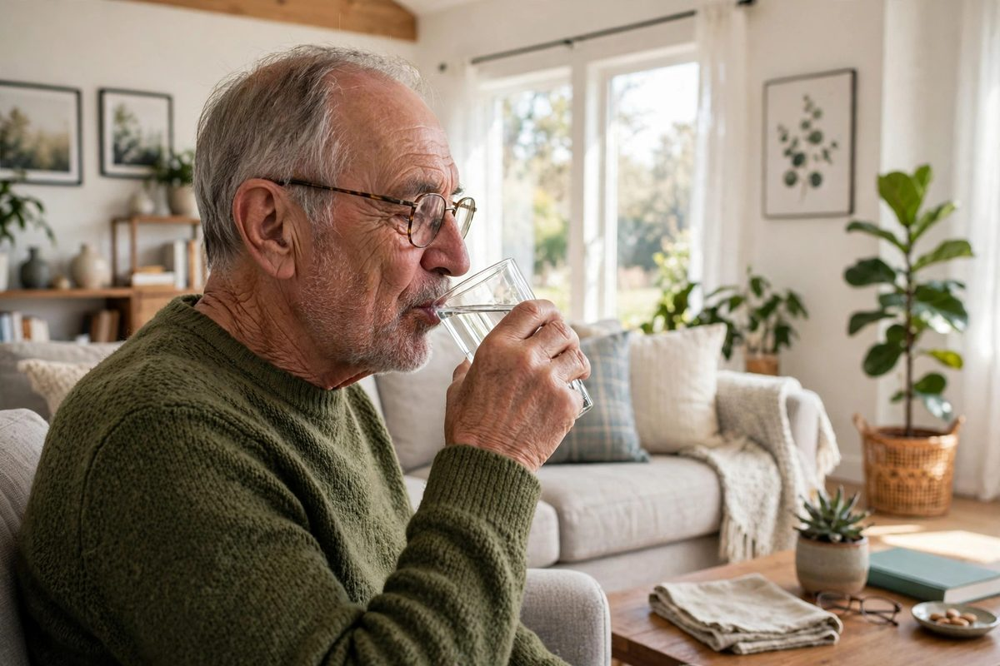

Water Intake for Older Adults
Why hydration gets harder with age, how much older adults need, and practical ways to drink enough every day.
Staying hydrated gets harder with age, not because the body needs less water, but because the signals that prompt drinking become weaker. Thirst fades, the kidneys conserve water less well, and medicines can increase losses. The result is that dehydration is one of the most common and most preventable problems in older adults. This guide explains the risks and the practical fixes.
Why thirst weakens with age
The thirst response becomes less sensitive as we age, so an older person can be short of water without feeling thirsty. The kidneys also become less able to concentrate urine and hold on to water, and the body's total water content falls as muscle mass declines. Medicines add to the problem: diuretics, often called water tablets, increase urine output, and some other medicines affect fluid balance. The combination means older adults need to drink on a schedule rather than waiting for thirst.
How much is enough
The weight-based guideline of about 30 ml per kilogram per day is a reasonable starting point for healthy older adults, which for a 70 kg person is about 2,100 ml of total water, including food. Some guidance suggests slightly less for older adults, around 1.6 to 2 litres of drinks a day, but individual needs vary with activity, climate and health. A doctor can advise on a personal target, especially for anyone with kidney or heart conditions, where fluid intake may need to be limited rather than increased.
Practical ways to drink more
Keep water within reach all day: a glass or bottle by the chair, by the bed, and on the kitchen table. Drink a glass with every meal and one between meals. Offer drinks regularly to someone you care for, rather than waiting for them to ask. Use drinks they enjoy: tea, diluted squash, soup, and milk all count. Keep a record for a week if intake is a concern, noting each glass, so the pattern is visible rather than guessed.
Signs of dehydration in older adults
The signs can be subtle and are often mistaken for something else. Confusion, dizziness, falls, constipation, urinary infections and tiredness can all be linked to low fluid intake. Dark urine, a dry mouth, and going to the toilet less often are clearer signs. A sudden change in confusion or alertness in an older person should always be taken seriously, and dehydration is one of the first things to check. If an older person is unwell, eating little, or not drinking, seek medical advice promptly.
Balancing fluids and night-time waking
Many older adults limit fluids to avoid waking at night, which is understandable but often makes the problem worse: a dehydrated day leads to concentrated urine, which irritates the bladder and can cause more night-time waking, not less. The better approach is to drink well during the day and taper off in the last hour or two before bed. If night-time waking is a problem, discuss it with a doctor rather than cutting fluids sharply, because the causes are often treatable.
A daily routine that works
A simple daily routine for an older adult looks like this. A glass of water on waking, a cup of tea with breakfast, a glass with a mid-morning snack, a glass with lunch, a cup of tea in the afternoon, a glass with dinner, and a small glass in the evening, for a total of about 1.6 to 2 litres of drinks. Keep a bottle or jug in sight, in the living room as well as the kitchen, so water is always within reach. A carer or family member can help by offering drinks regularly rather than waiting to be asked, and by noting each glass on a simple tally. The routine is built on regularity, not thirst, and it protects against the most common and most preventable problem in later life.
Frequently Asked Questions
How much water should an older adult drink?
About 30 ml per kilogram a day is a reasonable starting point, roughly 2 litres of drinks for a 70 kg person. A doctor can advise a personal target.
Why do older adults get dehydrated easily?
Thirst weakens, kidneys conserve water less well, and medicines such as diuretics increase losses.
Should older adults limit water to avoid night waking?
No, not sharply. Drink well during the day and taper off before bed. Cutting fluids can make bladder irritation worse.